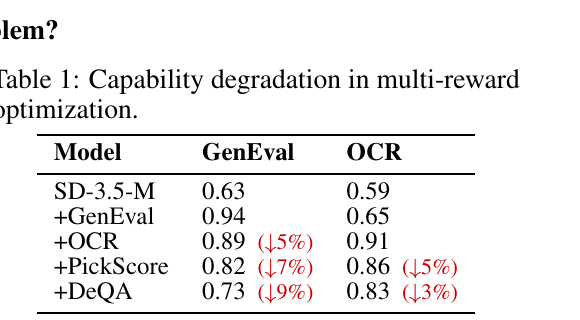
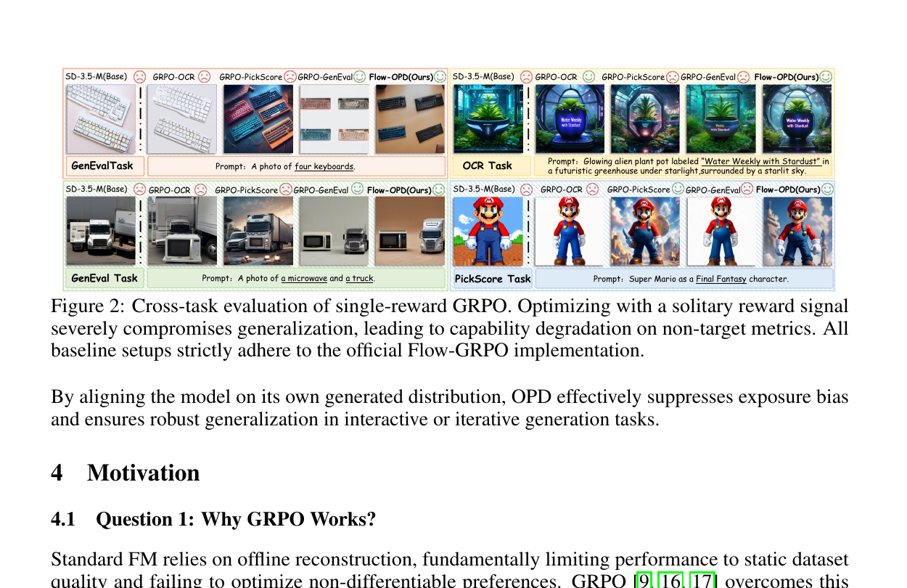
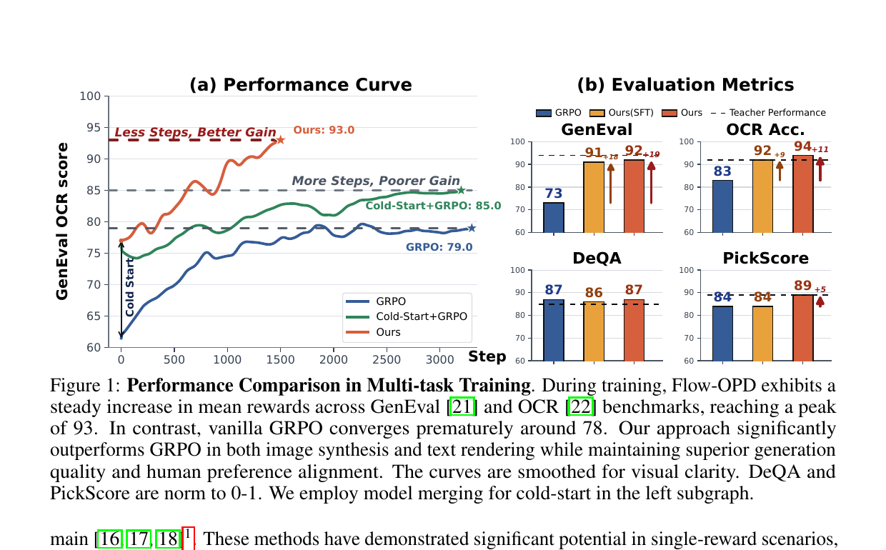
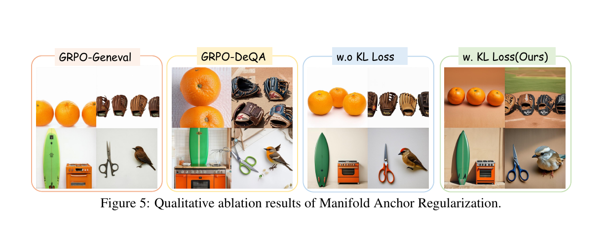
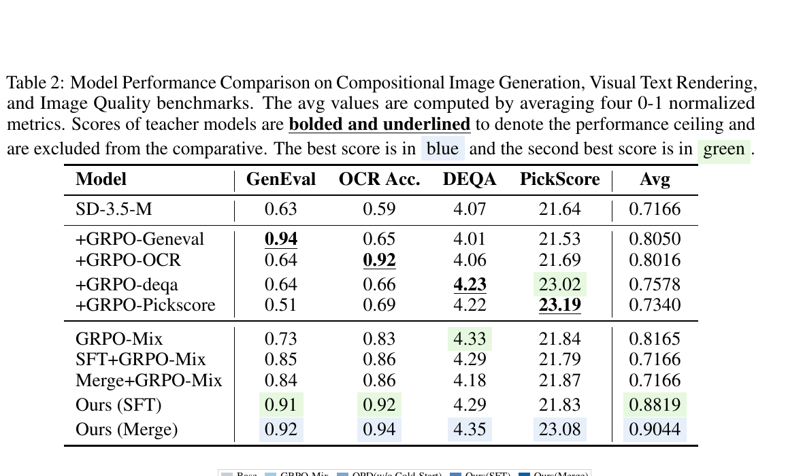
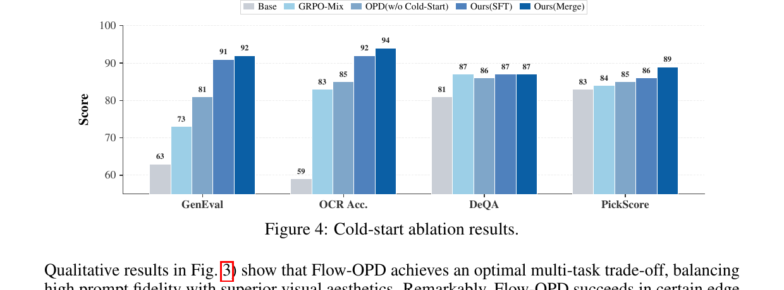
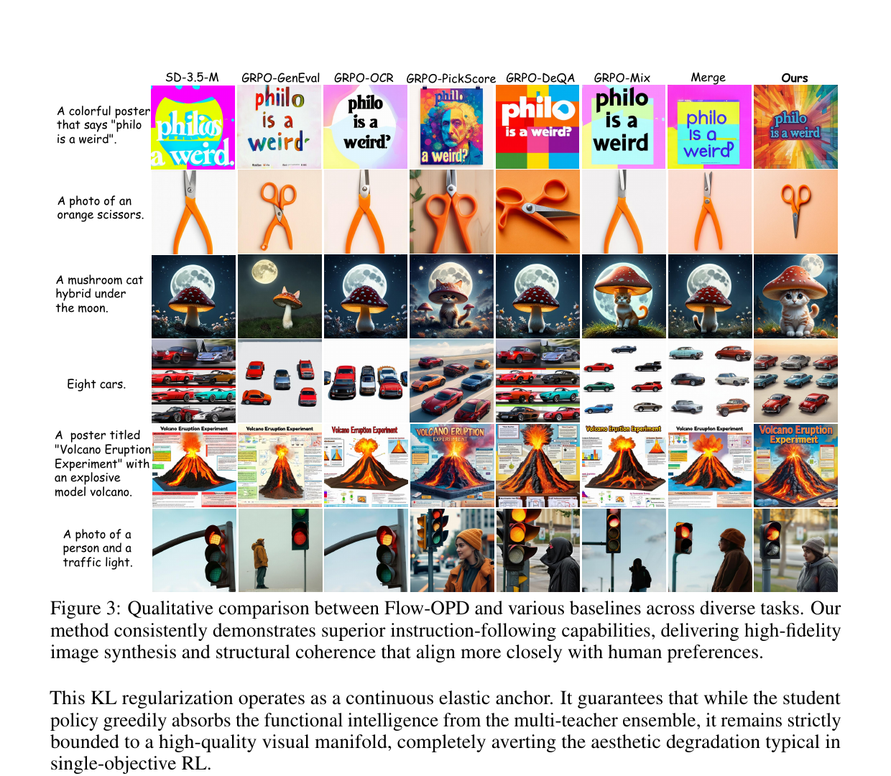

Flow-OPD: On-Policy Distillation for Flow Matching Models
1. 出发点 (Motivation)
T2I 模型 (Stable Diffusion 3.5 等 flow-matching backbone) 想要做"一个模型干很多事" — 同时擅长组合性 (GenEval)、文字渲染 (OCR)、美学 (PickScore)、整体质量 (DeQA)。RLHF 思路移植到这里就是 Flow-GRPO:把 reverse SDE 解释成 Markov 决策过程,reward 上 GRPO。
问题:单 reward 训练可以把一个指标拉满,但**"seesaw effect"** 立刻显现。Tab 1 是论文里那张让人脸疼的数据 — 一步一步叠加 reward,前面拉满的指标就一步一步往下掉:

视觉上更直白 — 单 reward 训出的"专家"在跨任务测试时常常崩坏:

论文给的因果解释 (Sec. 4.2): 单 reward GRPO 把多维冲突压缩成标量 advantage,模型为了最大化 A_1 会"吃掉"那些没被监督的参数自由度。一阶 Taylor 近似下,任务 T_1 对未监督任务 T_k 的伤害:
当任务梯度 \langle \nabla_\theta J_k, \nabla_\theta J_1\rangle \lt 0 (高维空间里这是常态),没有 T_k 监督的优化器会"主动"破坏 T_k 的能力来换 T_1 — 这就是 reward hacking 的根因。标量 reward 的信息密度天然不够,你需要 dense 的 trajectory-level 监督。
LLM 那边怎么解的?On-Policy Distillation (OPD) — 学生自己采样 → 教师在学生的 trajectory 上提供 dense 监督。DeepSeek-V4 / Mimo v2 / GLM-5 全在用。问题是 LLM 是离散 next-token,OPD 怎么"翻译"到连续速度场 flow matching 上?这就是 Flow-OPD 的全部技术贡献。
2. 方法 (Method)
核心思想 (类比)
把 SD-3.5-M 想成一个学画画的学生,要同时学:
- 构图老师(GenEval 教师) — 知道"四个键盘"要怎么放
- 书法老师(OCR 教师) — 教如何把字写对
- 审美老师(PickScore 教师) — 给作品打人类偏好分
- 画质老师(DeQA 教师) — 关心整体清晰度/质感
单 reward GRPO 像"每天只跟一个老师学,这周构图、下周书法"— 上下周互相覆盖,什么都学不全。
Flow-OPD 的玩法:学生自己画画,每画一笔老师都站旁边看 — 但每张图按内容路由,只让对应的老师评。
- "四个键盘"这种 prompt → 构图老师批,指着学生这一笔说"应该往左 3 个像素"
- "philo is a weird" 这种 prompt → 书法老师批
- 每张图都额外有一个 美学保安 (MAR) 在场,无论批啥都不让画风塌掉
关键技术问题是:怎么定量"老师建议学生这一笔往哪挪 X 像素"?在 flow matching 里,每一步的"建议"就是速度场的差。论文的核心数学贡献就是把这一点严格地从 reverse KL 推导出来。
2.1 Flow Matching 速览
Flow Matching (Lipman et al. 2023) 把噪声 p_0 映射到数据 p_{\text{data}} 的 ODE:
OT (Optimal Transport) 形式下,直线轨迹 x_t = (1-t)x_0 + t x_1,模型 v_\theta 学常速度 (x_1 - x_0),训练目标
把这一离散积分过程看成 Markov 步,就能与 RL 接上 — 这是 Flow-GRPO (Liu et al. 2025) 已经做的事,Flow-OPD 直接继承这一视角。
2.2 单 GRPO 为何失败 (sparse reward + 梯度干扰)
论文 Sec. 4 系统讨论了三个问题:
- Q1: GRPO 为何起作用? 因为 on-policy 探索打破了 offline SFT 受限于数据集质量的天花板。
- Q2: 单 GRPO 为何在多任务上崩? 见前面 Taylor 展开 — 标量 advantage 压缩了多维冲突,模型为提高目标指标会"吃"未监督的自由度。
- Q3: 直接混 reward 行不行? 不行 — Tab 1 显示每加一个 reward 旧能力就掉一截。
结论:必须同时满足 (a) on-policy (维持探索) (b) densely uncoupled (每个 task 独立信号,不竞争同一个标量)。这就是 OPD 范式 — 由多个 teacher 在学生的轨迹上分头提供 dense 监督。
2.3 ODE → SDE — 注入探索 (Eq. 5-6)
RL 需要 stochastic 行为策略才能做 importance sampling。Flow-OPD 沿用 Flow-GRPO 的做法,把确定性 ODE 转成等价 SDE:
Euler-Maruyama 离散化后,每一步的 transition 分布是各向同性高斯:
\sigma_t 是注入的噪声幅度 (实现里有 noise_level 超参,Flow-GRPO 默认 0.7),\mu_\theta 是由学生速度场决定的 Euler 步均值。每个 prompt 采 G 条 trajectory 得到 on-policy 边缘分布 \rho_t^\theta。
2.4 KL → L2 的精彩折叠 (Eq. 8-9)
这是论文的数学高潮。要把"OPD 用 reverse-KL 当奖励"翻译到连续域,关键问题是:在 SDE 框架下, \mathrm{KL}(\pi_\theta \| \pi_{\text{target}}) 怎么算?
注意学生策略 \pi_\theta = \mathcal{N}(\mu_\theta, \sigma_t^2\Delta t\,\mathbf{I}) 和教师 \pi_{\text{target}} = \mathcal{N}(\mu_{\text{target}}, \sigma_t^2\Delta t\,\mathbf{I}) 共享同一个协方差矩阵 — 因为 SDE 的 noise 注入是结构性的,不依赖模型预测。两个等方差高斯之间的 KL 有闭式:
代入 \Sigma = \sigma_t^2\Delta t\,\mathbf{I}:
把 \mu_\theta 按 SDE 离散化展开,常数项消掉,KL 就退化为速度场之间的 L2 距离:
记 w(t) 为前面的时间相关系数。每一步的 dense reward 就是负的、加权的、速度场 L2 差 (并 detach 掉 v_\theta 上的梯度):
这就是论文的核心 trick. Reverse KL 本来是 LLM 离散概率分布之间的事,在连续 flow matching 里它等价于速度场 L2 差 — 实现上你只需要每一步比较学生和教师的预测向量,完全不涉及任何概率密度的解析形式。\bar v_\theta 的 detach 至关重要 (Thinking Machines OPD 的设计哲学): reward 是被监督的目标,不是被反传的对象,梯度只通过 policy ratio 走。
2.5 任务路由 + 多教师 dense 监督 (Eq. 7)
四个 teacher 分别在四个 task 上 GRPO 训到饱和。在线训练时,每个 prompt c 被一个硬路由 R(c) 映射到一个 teacher k,只用这个 teacher 的速度场作为目标:
"硬路由"而不是"软混合" — 论文明确说这是为了消除 inter-domain 梯度干扰 — 同一个 prompt 一辈子只跟一个 teacher 学,不会出现"OCR 教师和 GenEval 教师推不同方向"的情况。

2.6 PPO clip + 冷启动 (Eq. 11)
Dense 高频 reward 会让 policy 跳得太狠,论文借 PPO 的 clipped surrogate 来限制每步的策略漂移。设 policy ratio \rho_{t,i,j}(\theta) = \pi_\theta(a_{t,i,j} \mid s_{t,i,j}) / \pi_{\theta_{\text{old}}}(a_{t,i,j} \mid s_{t,i,j}),对 B 个 prompts × G 条 trajectory × T 个去噪步取平均:
**冷启动 (Sec. 5.1):**如果学生从 base SD-3.5-M 直接进 OPD,初期 trajectory 完全偏离教师 manifold,信号噪声极大。论文给两个变体:
- SFT cold-start: 用每个 teacher 的采样轨迹做 SFT 一段时间
- Model Merging: 直接把四个 teacher 的参数平均 — Tab 2 显示这是最好的初始化方式 (Merge cold-start 后 OPD 达 90.4 avg,SFT cold-start 达 88.2)
2.7 Manifold Anchor Regularization — 锚定美学 (Eq. 12)
OPD 提供任务对齐的 dense 信号,但有"reward hacking 副作用" — 学生为了 OCR 把整张图画成纯白底黑字,GenEval 拼对了但背景塌成马赛克。MAR 加了一个 任务无关的美学 teacher v_{\text{aesthetic}} (论文用 DeQA 训出来的 teacher),在所有数据点上提供全场监督:
注意 MAR 是不分 task 全场施加的"美学保安";硬路由的 task-specific teacher 提供主要的能力监督。两套并行。

2.8 与代码对照
Flow-OPD 官方 repo 暂未释放训练代码 (TODO 列表第一条),但作者明确指出基于 yifan123/flow_grpo 实现。下面的引文都来自基础 codebase,Flow-OPD 在此之上的扩展点 (multi-teacher routing + detached \bar v_\theta + MAR) 是替换而不是新建这些函数。
(a) SDE 转换 + transition log-prob — 实现 Eq. 5-6。共方差结构在 L44-L50 (std_dev_t),正是后面 KL→L2 折叠之所以成立的根源。
repo_flow_grpo/flow_grpo/diffusers_patch/sd3_sde_with_logprob.py:L42-L68 — SDE Euler-Maruyama 步 + Gaussian transition log-prob
step_index = [self.index_for_timestep(t) for t in timestep]
prev_step_index = [step+1 for step in step_index]
sigma = self.sigmas[step_index].view(-1, *([1] * (len(sample.shape) - 1)))
sigma_prev = self.sigmas[prev_step_index].view(-1, *([1] * (len(sample.shape) - 1)))
sigma_max = self.sigmas[1].item()
dt = sigma_prev - sigma
if sde_type == 'sde':
std_dev_t = torch.sqrt(sigma / (1 - torch.where(sigma == 1, sigma_max, sigma)))*noise_level
# our sde
prev_sample_mean = sample*(1+std_dev_t**2/(2*sigma)*dt) \
+ model_output*(1+std_dev_t**2*(1-sigma)/(2*sigma))*dt
if prev_sample is None:
variance_noise = randn_tensor(model_output.shape, generator=generator,
device=model_output.device, dtype=model_output.dtype)
prev_sample = prev_sample_mean + std_dev_t * torch.sqrt(-1*dt) * variance_noise
log_prob = (
-((prev_sample.detach() - prev_sample_mean) ** 2) / (2 * ((std_dev_t * torch.sqrt(-1*dt))**2))
- torch.log(std_dev_t * torch.sqrt(-1*dt))
- torch.log(torch.sqrt(2 * torch.as_tensor(math.pi)))
)
注意 std_dev_t 完全由 timestep 决定,不依赖 model_output — 这就是为什么学生与教师的 transition 自动同协方差,从而 Eq. 8 中 \Sigma^{-1} 退化为标量。
(b) KL 退化为 mean-差 L2 + PPO clipped surrogate — 实现 Eq. 8 + Eq. 11。这是把 LLM-style PPO 移植到 flow matching 的核心循环。
repo_flow_grpo/scripts/train_sd3.py:L879-L904 — GRPO + KL 主循环
prev_sample, log_prob, prev_sample_mean, std_dev_t = compute_log_prob(
transformer, pipeline, sample, j, embeds, pooled_embeds, config)
if config.train.beta > 0:
with torch.no_grad():
with transformer.module.disable_adapter(): # base SD3 (LoRA off) 当 reference
_, _, prev_sample_mean_ref, _ = compute_log_prob(
transformer, pipeline, sample, j, embeds, pooled_embeds, config)
# grpo logic
advantages = torch.clamp(sample["advantages"][:, j],
-config.train.adv_clip_max, config.train.adv_clip_max)
ratio = torch.exp(log_prob - sample["log_probs"][:, j])
unclipped_loss = -advantages * ratio
clipped_loss = -advantages * torch.clamp(ratio,
1.0 - config.train.clip_range,
1.0 + config.train.clip_range)
policy_loss = torch.mean(torch.maximum(unclipped_loss, clipped_loss))
if config.train.beta > 0:
# KL between two same-covariance Gaussians == ||μ_θ - μ_ref||^2 / (2 σ^2 Δt)
kl_loss = ((prev_sample_mean - prev_sample_mean_ref) ** 2).mean(
dim=(1,2,3), keepdim=True) / (2 * std_dev_t ** 2)
kl_loss = torch.mean(kl_loss)
loss = policy_loss + config.train.beta * kl_loss
else:
loss = policy_loss
看 L900 — ((prev_sample_mean - prev_sample_mean_ref) ** 2) / (2 * std_dev_t ** 2) 是论文 Eq. 8 的逐字翻译。在 Flow-OPD 里,只需要把 prev_sample_mean_ref 替换成 task-routed teacher 的 \mu_{\phi_k},KL 项就变成 task-specific dense reward (Eq. 10);把 base 模型当 prev_sample_mean_aesthetic 再加一项,就得到 MAR (Eq. 12)。
(c) Flow-OPD 在 base codebase 之上的扩展点 — 教学性伪代码,无官方实现可引:
# Flow-OPD specific extensions (didactic — official training code not yet released)
def flow_opd_step(student, teachers, mar_teacher, prompts, prev_sample, t, dt, sigma_t, lam):
"""
teachers: dict[task_name -> teacher_model]
mar_teacher: 任务无关美学 teacher
"""
# ----- 1) on-policy student transition (Eq. 5-6) -----
v_student = student(prev_sample, t, prompts) # [B, C, H, W]
mu_theta = euler_maruyama_mean(prev_sample, v_student, t, dt, sigma_t)
# ----- 2) task routing (Eq. 7) -----
target_means = []
for prompt, sample in zip(prompts, prev_sample):
k = route_to_task(prompt) # GenEval / OCR / DeQA / PickScore
with torch.no_grad():
v_phi_k = teachers[k](sample.unsqueeze(0), t, [prompt])
target_means.append(euler_maruyama_mean(sample.unsqueeze(0), v_phi_k, t, dt, sigma_t))
mu_target = torch.cat(target_means, dim=0)
# ----- 3) dense reward = -w(t) * ||v_θ̄ - v_target||^2 (Eq. 9-10) -----
# NB: student vector field MUST be detached on the reward path
w_t = ((sigma_t * (1 - t) / (2 * t)) + (1.0 / sigma_t)) ** 2
r_opd = -w_t * dt * ((v_student.detach() - v_phi_k) ** 2).mean(dim=(1, 2, 3))
# ----- 4) PPO clipped surrogate uses r_opd as advantage (Eq. 11) -----
ratio = torch.exp(log_prob_student - log_prob_old)
policy_loss = -torch.minimum(ratio * r_opd,
ratio.clamp(1 - eps, 1 + eps) * r_opd).mean()
# ----- 5) MAR (Eq. 12) — task-agnostic aesthetic anchor on ALL samples -----
with torch.no_grad():
v_aes = mar_teacher(prev_sample, t, prompts)
mar_loss = (w_t * dt * ((v_student - v_aes) ** 2).mean(dim=(1, 2, 3))).mean()
return policy_loss + lam * mar_loss
三个关键区别于 flow-grpo 主循环:(i) prev_sample_mean_ref 不再是 base 模型,而是按 prompt 路由到的专家;(ii) v_\theta 在 reward 路径上 detach (paper Eq. 10 强调),梯度只走 ratio;(iii) 多了一个全场 MAR 项,reference 不是 base SD3 而是单独训好的 aesthetic teacher。
3. 结论 (Key Findings)
在 SD-3.5-M 上的四个 benchmark:

Teacher-Surpassing 现象 (paper Sec. 6.2): 在 OCR 上学生 0.94 超过 OCR teacher 的 0.92,DeQA 上学生 4.35 超过 DeQA teacher 的 4.23 — 单一 teacher 在自己专攻领域可能 cherry-pick 过头,而多 teacher dense 监督迫使学生学到更"全息"的速度场,在某些边界 prompt 上比任何单 teacher 都好。论文把这归因到"潜在 flow manifold 内的知识交叉传授"。

定性比较 (Fig. 3):

OOD 验证 (T2I-CompBench++): 在 paper 没训过的 7 维组合性 benchmark (Color, Shape, Texture, Complex, 3D-Spatial, Numeracy, Non-Spatial) 上 Flow-OPD 也全部最强 — 表明 dense 多教师监督对未见 prompt 也泛化。
MAR 的量化收益 (Tab 4): 在 ImageReward (1.02→1.36)、Aesthetic (5.87→6.23)、UnifiedReward (3.339→3.659)、HPS-v2.1 (0.2982→0.3302)、QwenVL Score (3.45→4.05) 上全面提升 — w/o MAR 这些指标都明显回退。
4. 实现细节 (Implementation Notes)
**代码状态:**官方 repo CostaliyA/Flow-OPD 目前只发布:README + 项目页 + arxiv PDF + HF model checkpoint。TODO 列表第一条"Release full training code"标为 in progress。训练循环的真实代码不可访问。下方实现细节来自 paper §6.1, Appendix, 加上致谢的基础 codebase yifan123/flow_grpo。
- Backbone: Stable Diffusion 3.5 Medium。Teacher 与 student 同一 backbone,只是 LoRA / 参数权重不同 — 这让 model merging 才有意义。[paper §6.1]
- 四个 task 的 reward: GenEval (组合性), OCR (文字渲染), PickScore (人类偏好), DeQA (图像质量)。每个 task 都用 Flow-GRPO 官方 checkpoint 作为 teacher,除了 DeQA — DeQA teacher 是单独训的,用 DeQA:PickScore = 4:6 混合 reward。[paper §6.1]
- 训练资源: 4 节点 × 8×H800 = 32 GPUs 训练;1 × 8×H800 评估。重现成本高。[paper §6.1]
- SDE noise level: Flow-GRPO 代码默认 0.7 (
sd3_sde_with_logprob.py:L16) — Flow-OPD 没单独消融过这个超参,默认沿用。 - Gradient detached on student velocity (Eq. 10): 非常关键。论文明确写"the gradient backpropagation must be strictly detached from this divergence calculation"。否则 KL 项会把 student 自己往 reference 拉,变成纯 SFT 而失去 on-policy 性质。这条很容易在实现里搞错。
- Hard routing R(c): 每个 prompt 静态地映射到一个 task — 论文没给具体实现,但合理实现方式是 prompt 元数据 (GenEval prompts 来自 GenEval 数据集 metadata,OCR prompts 模板化"...with text 'X'" 等)。Soft mixing 被显式拒绝 ("eliminate inter-domain gradient interference")。
- Cold-start 两个变体:
- SFT-based: 用各 teacher 采样的 trajectory 做 SFT (paper §5.1),沿用
repo_flow_grpo/scripts/train_sd3_sft.py的流程 - Model Merging: 直接把四个 teacher 参数(等)权平均 — Tab 2 显示 Merge (0.9044) 比 SFT (0.8819) 更好,且零额外训练成本
- SFT-based: 用各 teacher 采样的 trajectory 做 SFT (paper §5.1),沿用
- MAR 的 aesthetic teacher 来源: "optimized via DeQA" — 复用前面的 DeQA teacher。所以这个组件 reuse,没有额外训一个新模型,但论文没写 MAR 的 \lambda 值,需要自己 sweep。
- PPO clip 参数: 沿用 flow-grpo,
config.train.clip_range通常取 0.2,adv_clip_max通常取 10 — 这些都在config/base.py默认值。Flow-OPD 没单独 ablation。 - "代码 vs 论文"的 gap (重点): 真实训练代码未发布,论文 Eq. 7 的 routing 函数、Eq. 12 的 \lambda、多教师 batch 编排、MAR teacher 的具体实现 — 都需要读者自己复刻。这是 paper 的最大可重现性短板。
5. 批判性总结 (Critical Assessment)
5.1 优点
- 核心数学折叠 (Eq. 8-9) 是真功夫。 共方差结构 → KL 退化为速度场 L2 — 不是 hand-wave,是严格的 SDE 推导。这一步把"OPD 是 LLM 离散域的事"翻译成"flow matching 连续域里就是 dense L2 supervision",打通了视觉生成做 OPD 的通路。
- Detach \bar v_\theta 的细节体现工程素养。 论文显式强调梯度只通过 policy ratio 走,不通过 KL — 这正是 Thinking Machines OPD 设计哲学的正确移植,避免了"KL reg → 实际上是 SFT 化"的常见坑。
- Hard routing 而非 soft mixing 是有意识的选择。 单 reward GRPO 失败的根因就是标量 mixing 引起的梯度干扰,routing 在 input 端就消除冲突 — 这比 reward space 的混合干净得多。
- Teacher-Surpassing 是个非平凡的 emergent。 学生在 OCR 和 DeQA 上超过自己 teacher — 表明多 dense 监督的几何效应不只是"加权平均"。
- OOD 验证 (T2I-CompBench++) 不只在 in-domain 报数。 跨 7 个组合性维度全部领先,验证 dense 多教师监督的泛化能力,而不只是过拟合到 4 个训练 benchmark。
- 对失败模式的因果分析 (Sec. 4.2) 给出可验证的解释 (Tab 1 + Eq. 4)。 不是"我们观察到 seesaw 效应",而是"按 Taylor 展开,梯度冲突项 \langle \nabla J_k, \nabla J_1\rangle \lt 0 时优化器会主动破坏 T_k" — 提供了机制层面的理解。
5.2 不足 / 疑点
- 训练代码未发布,可重现性堪忧。 项目 repo 名义上"official code",实际只有 README + PDF + HF weight。Routing 函数、MAR 超参 \lambda、训练 schedule 这些工程细节都缺失。需要至少 32×H800 才能尝试复刻 — 门槛极高。
- 四个 reward 选得太"舒适"。 GenEval / OCR / PickScore / DeQA 正好是 Flow-GRPO 论文官方释放的四个 teacher 配置,论文几乎"拿现成"。如果换成更冲突的对 (例如 "anime style" vs "photorealistic" 同时训),hard routing 还能干净分开吗?
- "Teacher-Surpassing" 只在 2/4 指标上成立。 GenEval 上 student 0.92 没超过 teacher 0.94,PickScore student 23.08 vs teacher 23.19 也是平手或略低 (Tab 2)。论文夸大成普遍效应,实际只在 OCR (+2) 和 DeQA (+0.12) 上超过。
- Hard routing 假设 prompt 能干净地归到一个 task — 现实 prompt 跨 task。 例如 "A poster titled 'Volcano Eruption Experiment'" 同时需要 OCR (文字) + GenEval (组合) + PickScore (美学) — 路由到哪个 teacher?论文没讨论这个 boundary case,Fig 3 里这条 prompt 也能看出 Flow-OPD 的火山字体清晰度其实不如 GRPO-OCR (但其他维度更好)。
- 评估全是自动指标,没有人评。 GenEval / OCR / DeQA / PickScore 都是自动 metric — 而 Reward Hacking 的根本风险就是这些 metric 本身的偏差;用 metric 验证消除 reward hacking 是循环论证。MAR 是否真改善了"人类看到的美学",需要 user study。论文给了 ImageReward / HPS-v2.1 / QwenVL Score 等"模型评判员"的二级指标,但没有真人 study。
- 纯 OPD (无 cold-start) 没单独完整曲线。 Fig 4 显示 OPD w/o cold-start 拿到 81 GenEval — 但 OPD vs OPD+ColdStart vs OPD+ColdStart+MAR 的渐进消融在论文里只有终值,没有学习曲线。每个组件的边际贡献不清楚。
- 算力门槛 4×8×H800 (32 GPUs)。 训 4 个独立 teacher + student + 多教师并行推理 + MAR teacher 全部要 GPU 内存。学术界很难复刻;工业界也只有头部能用。
- SDE noise level 0.7 是个未消融的强假设。 这个参数控制 on-policy 探索强度,大概率对结果影响显著,但论文沿用 Flow-GRPO 默认值,没做敏感性分析。
- Cold-start (Merge) 后的初始模型其实已经很强。 Fig 4 的 "OPD w/o cold-start" 起点 GenEval 81 = 平均四 teacher 的 GenEval 表现 (Tab 2: GenEval-teacher 0.94, OCR-teacher 0.64, PickScore-teacher 0.51, DeQA-teacher 0.64 → 平均 0.68 但 merge 之后 81),OPD 在此基础上只再加 11pt 到 92。这暗示Merge 本身就贡献了大半,OPD 的边际贡献可能被论文叙事掩盖了。
- "On-Policy" 这个标签可能不严格。 论文用 PPO clipping (Eq. 11),意味着实际是 近 on-policy 而非严格 on-policy — clipped surrogate 允许 stale samples 复用。这跟 RL's Razor (arxiv 2509.04259) 把"on-policy"定义为采样源严格来自 \pi 的标准对齐还是不一样,严格说应叫"近 on-policy"。
5.3 适用 vs 不适用
- ✅ 适用: flow matching / 扩散类生成模型的多任务 RL 对齐 — SD3, FLUX, Lumina, Wan 等都可以套这套 KL→L2 折叠 (论文 codebase 已支持多个 backbone)。
- ✅ 适用: 已经能为每个子任务单独训一个 reward / teacher 的场景。
- ✅ 适用: 想避免 reward hacking 但又要打多目标的工业 T2I 训练。
- ❌ 不适用 / 推荐其他方案: 单 reward / 单任务对齐 — 直接 Flow-GRPO 即可,Flow-OPD 是过度工程。
- ❌ 不适用: 无法训单 teacher 的全新任务 (例如刚提出的新评估)。
- ⚠️ 谨慎: 多任务边界模糊的 prompt 上的 routing 退化未知;hard routing 在开放 prompt 场景下需要额外的 fallback 设计。
- ⚠️ 谨慎: 训练代码未公开,本博客的 §2.8 (c) 是教学性实现而非作者代码 — 实际跑通需要自己拼。
5.4 进一步阅读
- Flow-GRPO — yifan123/flow_grpo:Flow-OPD 的基础 codebase,SDE 转换 + KL→L2 折叠首先就出现在这里 (paper §3 "Preliminaries" 引用 Flow-GRPO 时已经默认这一推导)。
- DDPO (Black et al. 2023):把扩散模型当 RL 来训的开山工作;DPOK / ImageReward 是同期相关工作。
- Shao et al. 2024 — DeepSeekMath / GRPO:GRPO 的原始论文,Flow-OPD 的 PPO clip 部分继承自此。
- Thinking Machines 的 OPD blog [41]:论文 Eq. 2 引用的 LLM OPD 范式来源,detach 设计的思想根源。
- RL's Razor (Shenfeld et al. 2025):同期"为什么 RL 比 SFT 少遗忘"的研究,论证 on-policy 采样自带 KL-min 偏置。Flow-OPD 实际上是"把 on-policy 偏置 + dense supervision 都用上",可以与 RL's Razor 的结论印证。
- Mimo v2、DeepSeek-V4、GLM-5:LLM 域 OPD 的成功案例,本论文 introducction 引用的对照对象。
- GDPO [33]:讨论 GRPO 在多 reward 下 reward-normalization collapse 的问题,补充 Flow-OPD §4 的失败模式分析。